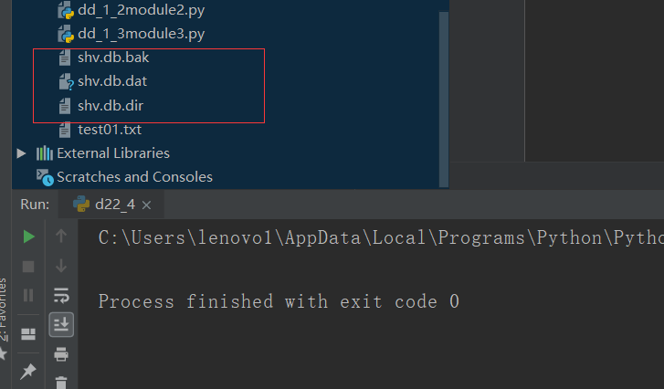
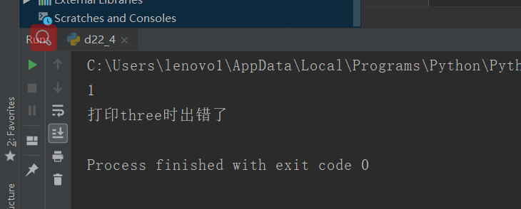
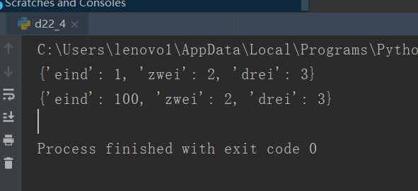

原文出处:本文由博客园博主心悦君兮君不知-睿提供。
原文连接:https://www.cnblogs.com/ruigege0000/p/11253563.html
原文连接:https://www.cnblogs.com/ruigege0000/p/11253563.html
一、持久化 --shelve
持久化工具
（1）作用：类似字典，用kv对保存数据，存取方式类似于字典
（2）例子：通过一下案例创建了一个数据库，第二个程序我们读取了数据库
#使用shelve创建文件并使用
import shelve
shv = shelve.open(r"shv.db")
shv["one"] = 1
shv["two"] = 2
shv.close()
shv = shelve.open(r"shv.db")
try:
print(shv["one"])
print(shv["three"])
except:
print("打印three时出错了")
finally:
shv.close()

2.shelve特性
（1）注意：不支持多个应用并行写入，为了解决这个问题，open的时候可以使用writeback=True,注意一点如果不传入这个参数我们后面对数据的更改只会在内存中进行更改，而不会写回数据库
（2）写回问题
shelve不会等待持久化对象进行任何更改
shv = shelve.open(r"shv.db",writeback=True)
try:
shv["one"] = {"eind":1,"zwei":2,"drei":3}
one = shv["one"]
print(one)
#这里就对 数据进行了更改，如果没有上面writeback=True,下面额语句就白写了
one["eind"] = 100
print(one)
finally:
shv.close()
三、源码
d22_4_shelve_module.py
地址：https://github.com/ruigege66/Python_learning/blob/master/d22_4_shelve_module.py
2.CSDN：https://blog.csdn.net/weixin_44630050（心悦君兮君不知-睿）
3.博客园：https://www.cnblogs.com/ruigege0000/
4.欢迎关注微信公众号：傅里叶变换